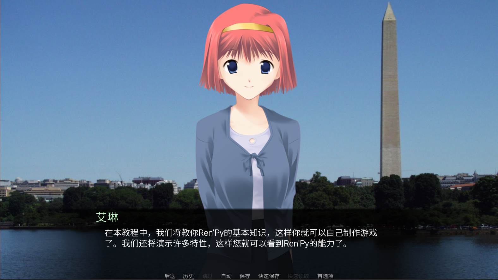
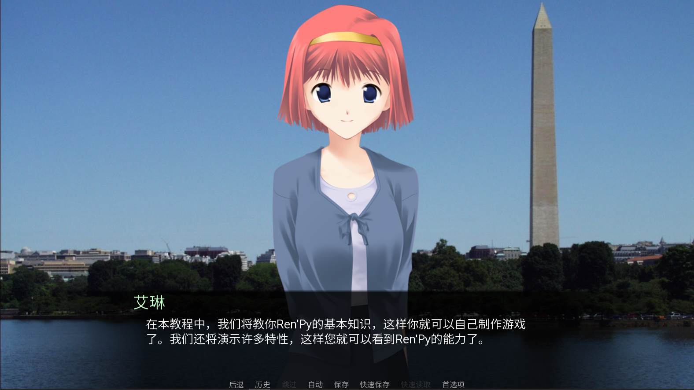

Tutorial
这款 Renpy 教程游戏是一款讲解如何使用 Renpy 制作游戏的交互式教程。它通过演示如何使用 Renpy 的可视化界面、图像资源、音频资源、文本功能和用户界面元素来帮助新手学习 Renpy 的基础知识。这款教程游戏是一个非常好的学习 Renpy 的工具，适合初学者或有一定编程基础的玩家。
探索我们用Renpy制作的视觉小说之旅

这款 Renpy 教程游戏是一款讲解如何使用 Renpy 制作游戏的交互式教程。它通过演示如何使用 Renpy 的可视化界面、图像资源、音频资源、文本功能和用户界面元素来帮助新手学习 Renpy 的基础知识。这款教程游戏是一个非常好的学习 Renpy 的工具，适合初学者或有一定编程基础的玩家。
